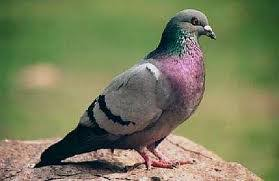
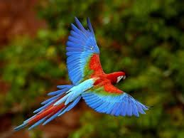

los animales aereos
Los animales aéreos son los que pueden volar o desplazarse por el aire por sus propios medios valiéndose de diferentes adaptaciones corporales
como alas o plumas. Su capacidad de moverse por el aire no significa que su hábitat sea allí, sino que combinan varios territorios para subsistir.
Algunos animales aéreos tienen alas que les permiten desplazarse por el aire y continuar volando por un tiempo prolongado (controlando su dirección,
velocidad y altura).Otros, se desplazan por el aire pero con menor control de su vuelo (por lo que no pueden realizar distancias muy grandes).

